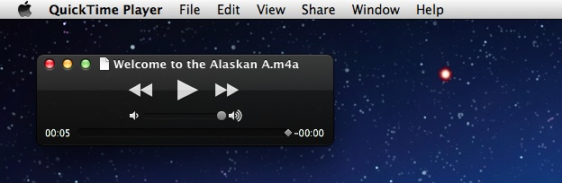

Now that the services have been created and installed, we can use them to create the rendered narration audio clips that are added to the GarageBand slideshow project.
Preview the Narration
The first step in creating a rendered track is to preview the the narration with the voice you want to use for rendering.
DO THIS ►Select the text for the first narration clip by clicking anywhere within the text area below.
01-MALE:
DO THIS ►With the text selected, type the keystroke combination you assigned for reading the text with a male voice: Control-2 (⌃2)
The selected text will be read using the chosen male voice.
Render the Narration
The next step is to render the selected text into an audio file and open the rendered file in QuickTime Player application.
DO THIS ►With the text selected, type the keystroke combination you assigned for rendering the text with a male voice: Control-Option-2 (⌃⌥2)
The selected text will be rendered into an audio file and opened in the QuickTime Player application.
Play the Rendered Narration
DO THIS ► Play the audio clip to confirm that the text was rendered properly.

Congratulations, using the Automator servics you created, you easily turned selected text into a narrated audio file! Next, you’ll learn how to add the audio clip to the GarageBand project template.